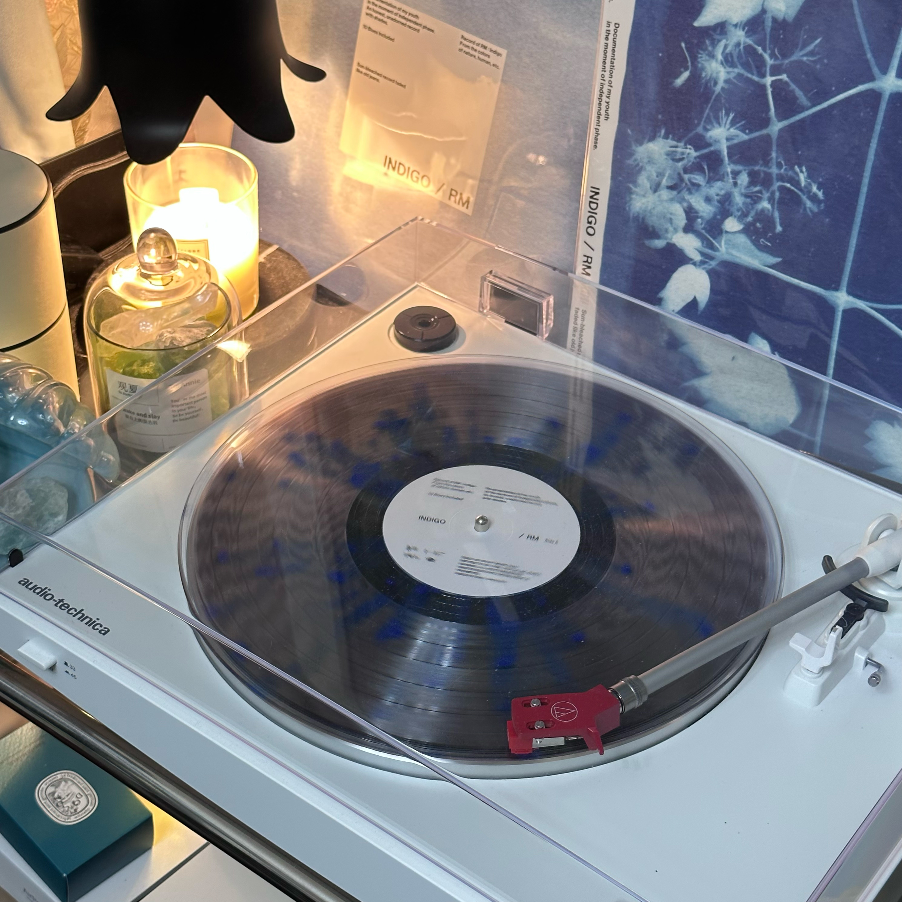
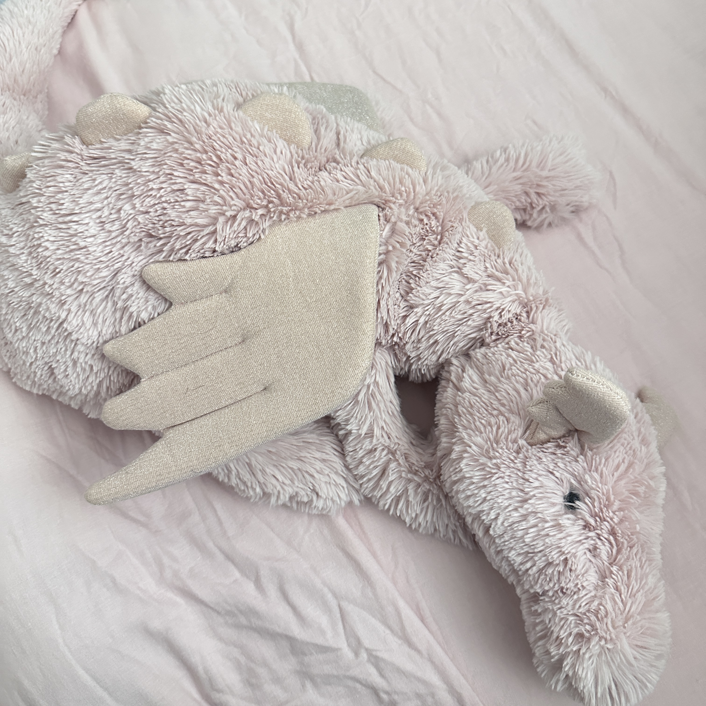

Collections ‣
Documentation: Vinyl Records
Grayground.

1. Where I got it: my Korean friend went to an offline pop-up store waited for three hours to get it for me.
2. Diameter: 12 inches
3. Thickness: 1.5 millimeters
4. Weight: 140 grams
5. Why I like it: I love this artist for several years. Vinyl records are collectible items, with various pressings, limited editions, colored vinyl, and picture discs that appeal to collectors. The hunt for rare records or special editions adds an element of excitement and discovery. The package design is great.
Documentation: Toys
Huge Rose Dragon

1. Where I got it: When I went to London, my highschool friend gave it to me as a welcome gift.
2. Size: 7x26 inches
3. Weight: 1.35 pounds
4. Material: polyester fibers
5. Why I like it: I love to hug a plush toy when I sleep, it's so soft and cute.
Documentation: Travel
Chicago

1. Distance: 1271 kilometers between Chicago and New York
2. Population: estimated to be 2,599,059
3. Cultural and Recreational Spaces: there are lots of parks and museums.
4. Why I went there: I actually went there for a concert, the show was wonderful and people there were so kind.
5. Why I like this place: I love exploring new places, and Chicago is so comfortable when I was staying there. There're lots of great restaurants!